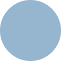

Starting out
Idio Creative was founded by Anna Moore while pursuing her master’s degree at university. Anna faced the pressure of juggling business operations while still having time and energy to create. She realized, without the time to be creative, her business was losing its appeal—the uniqueness that made it desirable in the first place.